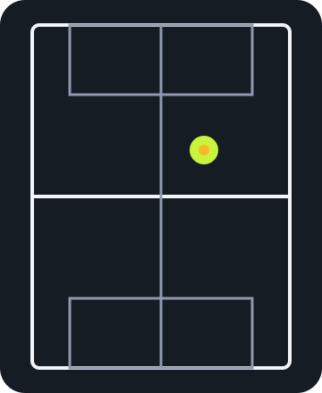

01
Graba un partido. Obtén los puntos, el marcador y un vídeo de highlights.
Un marcador de tenis y pádel de código abierto. En desarrollo.

Qué es Vamos
02
Encuentra los puntos y lleva el marcador
03
Corta un vídeo de highlights
Por qué ayudar
Vamos es de código abierto (AGPL-3.0) y está en desarrollo. Puedes ayudar etiquetando clips públicos en Creative Commons (CC BY), para que el motor aprenda quién ganó cada punto.
Beat the Engine
Entrena tu propio modelo de ganador de punto. Lo evaluamos en un entorno aislado, sobre un conjunto de prueba privado. Hay una clasificación pública de modelos. Solo reconocimiento — sin premios.
Precisión del motor antes/después del último reentrenamiento: — → —, a partir de — llamadas de la comunidad
Sin reconocimiento facial, y nada identifica a los jugadores entre partidos.